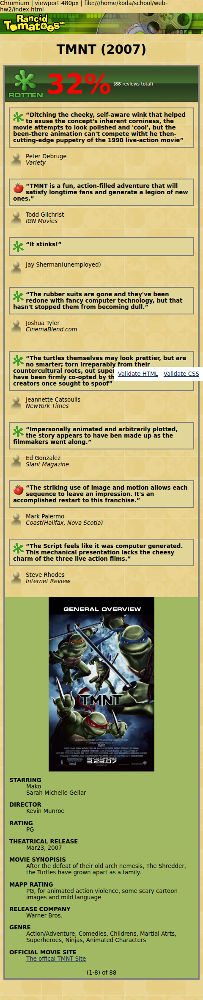
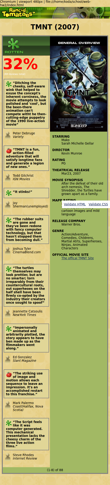

Niki Durzynski, section 002
The first review box changed from rgb(225, 214, 151) to transparent after I removed its background-color declaration in the browser. The saved stylesheet keeps the original color.
.review p { background-color: transparent; }
.review .quote { background-color: #e1d697; }The second selector has specificity 0,2,0. The first has 0,1,1, so the second wins. Removing its background declaration lets the first rule apply. The body background shows through the box. Background color is not inherited. Source order breaks a tie in specificity, but these rules are not tied.
Before, 480px:
After, 480px:

At a 480px viewport, the main region and sidebar each measured 456px. The document scrollWidth was 480px. These values came from getComputedStyle, not screenshots of the Computed panel.
.movie-frame {
grid-template-columns: minmax(0, 1fr) 250px;
width: 800px;
max-width: calc(100% - 24px);
}
@media (max-width: 700px) {
.movie-frame {
grid-template-columns: minmax(0, 1fr);
grid-template-areas: "reviews" "overview" "counter";
}
.review-columns {
grid-template-columns: minmax(0, 1fr);
}
}I restored two columns at 480px for comparison. The main region shrank to 206px while the sidebar stayed 250px. It still fit, but the review text became narrow. Stacking gives reviews more space. The trade-off is a longer page, with the overview below the reviews.
Two-column comparison, 480px:

W3C HTML validation returned zero errors, with informational self-closing-tag notices. CSS validation returned zero errors and zero warnings.